A little after half past six on the evening of 11 May 1944, a second lieutenant from Houma, Louisiana, watched the lead ship's bombs fall away over the railway yards at Liège and pushed his own release. Seconds later a flak shell hit the wing of his B-17. The aeroplane caught fire, fell away, and blew apart — and the explosion threw him clear of it.
Seven of the ten men aboard were killed. He spent the next year as a prisoner of the Germans. Forty years after that his name turned up in a company newspaper at the factory that built the Space Shuttle's fuel tanks, and at 102 the country he fell into made him a knight.
Most of what follows is Murray Lirette's own telling, set down by Matt Mabe of the 100th Bomb Group's historical team and board of directors in Surviving the Bloody Hundredth: The Service of Murray Lirette. Where his account and the wartime paperwork differ, the difference is in a footnote rather than in the story.
- Born
- 6 April 19241
- Serial number
- O-767531, U.S. Army Air Forces
- Rank
- Second Lieutenant
- Trade
- Bombardier
- Unit
- 351st Bomb Squadron, 100th Bomb Group (H), Eighth Air Force
- Station
- Thorpe Abbotts, Norfolk — AAF Station 139
- Aircraft
- B-17G 42-39983 Katie, code EP-F
- Pilot
- 2nd Lt Jack Hunter
- Shot down
- 11 May 1944, Liège, Belgium — flak · MACR 4866
- Captivity
- Brussels · Stuttgart · Stalag Luft III, Sagan · Nuremberg · liberated 17 April 1945
- Honour
- Chevalier de l'Ordre de Léopold, Belgium, 2026
Houma, 1941
He was a Terrebonne Parish boy, from Houma in the bayou country south-west of New Orleans: Murray Joseph Lirette, son of Mr. and Mrs. Alex J. Lirette. He went through Terrebonne High School in Houma and on to Louisiana State University in Baton Rouge.
In December 1941 he was a freshman at LSU, in the ROTC and playing several sports well. The sports and the ROTC were going better than the coursework. Expecting to be drafted, and interested in aviation, he enlisted in the Army Air Forces in October 1942.23
“You might say the war saved me from further embarrassment at LSU.”Murray Lirette
Santa Ana to Pyote
After several months of cadet training at Santa Ana, California, Lirette and a room full of other cadets were assembled in an auditorium and told what the army had decided they were: bombardiers. He went on through bombardier training, and on 16 October 1943 the Houma Times reported that Murray Joseph Lirette was among the cadets awarded their wings and second lieutenants' commissions at Roswell Army Air Field, in New Mexico. The O at the front of his new serial number, O-767531, marked him as an officer rather than an enlisted man.
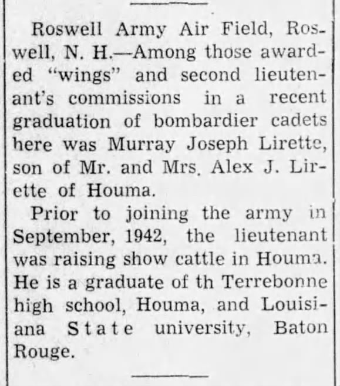
That same month he was assigned to a B-17 crew at Pyote, Texas — the vast, wind-scoured bomber base in the West Texas desert that its own airmen called the Rattlesnake Bomber Base. There is a photograph of those men. Lirette is kneeling at bottom right.
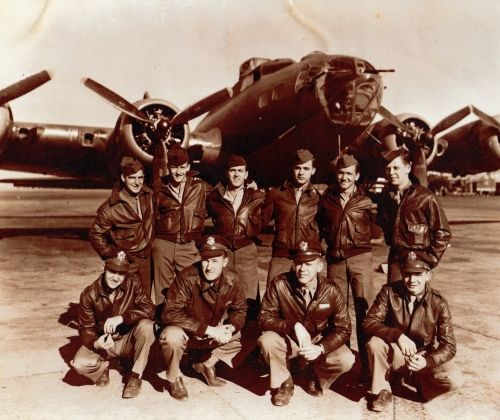
He never went to war with them. Shortly after the photograph was taken the crew's pilot and co-pilot were transferred to a B-29 training group, which left Lirette without a crew, and he spent the following weeks working as an instructor on the base.
Then he was called into the Chief's office and told that a crew about to leave for England — 2nd Lt Jack Hunter's — had lost its bombardier. Lirette volunteered, and travelled to Kearney, Nebraska, to meet the men he would go to war with.
The Hunter crew, as it stood, was ten: Jack Hunter, pilot; George Shoesmith, co-pilot; Richard Heh, navigator; Murray Lirette, bombardier; Spiro Lecouras, radio operator; Arthur Wellingham, engineer and top turret gunner; Ernest Medhurst in the ball turret; Samuel Martiello and Robert Kuehl at the waist guns; and Herbert South in the tail.
The nose of a B-17
The job is worth being precise about, because everything that follows depends on it. In a B-17G the bombardier sat in the extreme nose, ahead of the pilots and beside the navigator, inside a frame of perspex with almost nothing solid around him. For most of a mission he was a gunner.
On the bomb run he had the one job that mattered. In the lead ship a bombardier sighted the target through the Norden bombsight, which was coupled through the autopilot to the aircraft's controls, so from the initial point to bombs away he was effectively flying the aeroplane. Every other bombardier in the formation opened his bomb bay doors, watched the leader, and hit his own release the moment the lead ship's bombs came out, so that the whole formation's load fell together. Either way it meant the same thing: straight, level and predictable through the most heavily defended minutes of the flight, at exactly the moment every gun below had its best chance.
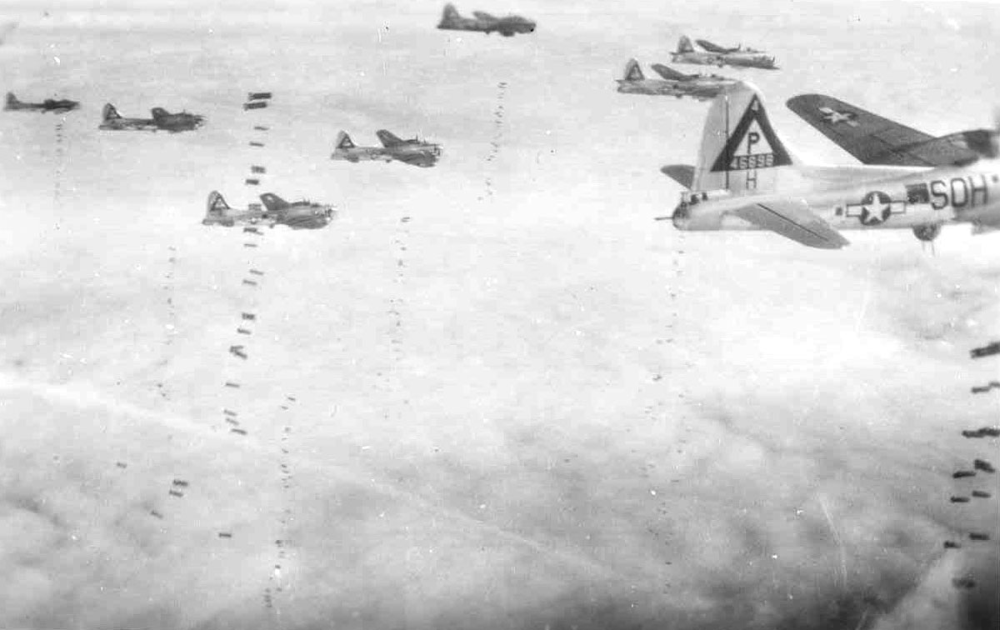
Decades later, a profile written about him described the qualities the job demanded in terms he had carried into the rest of his life: patience, focus and discipline.
The Bloody Hundredth
The Hunter crew reached England and was assigned to the 100th Bomb Group on Lirette's birthday, 6 April 1944,4 and to its 351st Bomb Squadron at Thorpe Abbotts, near Diss in Norfolk. Farmland, Nissen huts and a control tower.
They had come to a group with a name. The 100th had flown its first mission in June 1943, and since then had become the Bloody Hundredth: nine aircraft lost over Regensburg in August 1943, twelve over Münster that October, fifteen over Berlin on a single day in March 1944 — a month before the Hunter crew arrived.
The group's own veterans added an honest qualification to the legend. Across 306 missions the 100th lost 177 aircraft, fewer than the 91st Bomb Group's 197. What marked the Hundredth was not the total but the shape of it: long stretches of ordinary attrition broken by single days of catastrophe, with roughly half of all its losses packed into about eight missions. The navigator Harry Crosby put it in his memoir as a matter of losing big rather than losing often.
Ten missions in five weeks
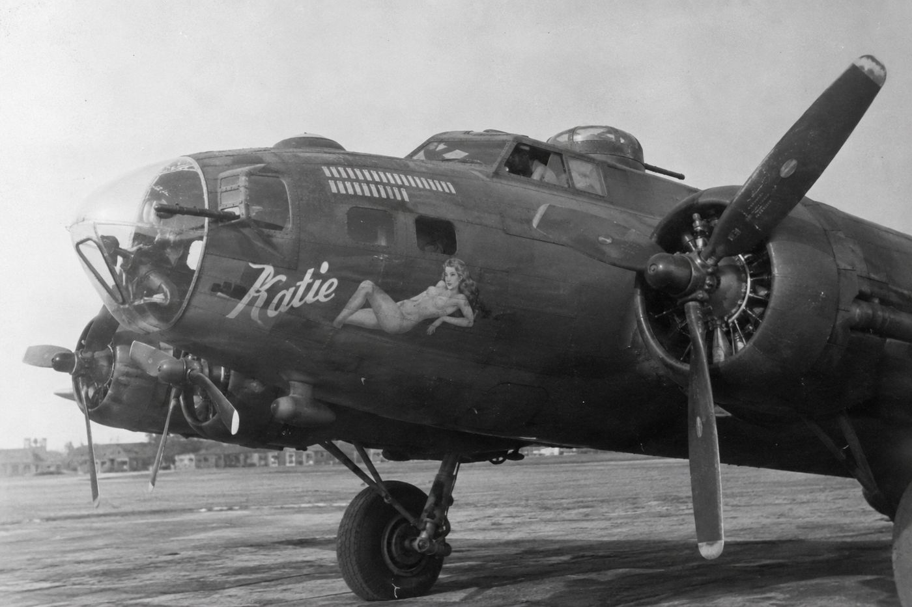
The crew's aeroplane was Katie, serial 42-39983, squadron code EP-F, at Thorpe Abbotts since 4 December 1943.
By 8 May 1944 they had flown ten missions, two of them to Berlin.5 Three of the ten can be put to the crew by name from the group's records, all in Katie: 7 May to Berlin, group mission 111, when thirty-six of the group's aircraft went and bombed through cloud by Pathfinder methods; and 8 May, when the group flew twice — Berlin again in the morning, mission 112, and in the afternoon mission 113, against a “No-Ball” target, an Allied code name for the V-weapon sites, at La Glacerie near Cherbourg.
Coming home safely did not mean coming home unhurt. On 7 May another of the 100th's B-17s landed with its navigator dead and its bombardier wounded. On the La Glacerie trip the Hunter crew's own right waist gunner, Samuel Martiello, was hit — in the backside, as the top turret gunner Arthur Wellingham recorded it in the crew journal he kept, with the flatness of a man who had decided to find things funny.
Martiello was off flying status three days later, and so was the ball turret gunner, Ernest Medhurst. Two other men were put aboard Katie in their places.
Lirette flew in a flak suit, and he had a habit with his parachute. He hooked it on the right side of his harness only, so that it hung down his right side and let the flak suit sit close, and he trusted that if anything happened he could swing the chute across and get the second hook in quickly.
Liège
Thursday, 11 May 1944. The group was alerted at half past ten that morning that something would be going off in the afternoon. At half past twelve thirty-six crews sat down to the briefing, and the intelligence officer, Captain Paul Mackesey, gave them the target: the marshalling yards at Liège, in occupied Belgium.
He made the case in numbers. More than fifteen hundred goods wagons passed through those yards every twenty-four hours. The sidings ran to sixteen tracks and could hold two thousand wagons. It was a hinge in the German rail network feeding France and the Low Countries, four weeks before the Normandy landings. Aachen was the secondary.
Mackesey told them what to keep clear of — the heavy batteries around Antwerp and Woensdrecht, the guns at Herenthals off to the right at the edge of their range — and what was waiting at the other end: sixteen heavy guns defending the target itself.
The 100th was leading. Lieutenant Colonel Ollen Turner flew at the head of the 3rd Air Division and of the 13A formation, and Hunter's crew was in the Lead Squadron.
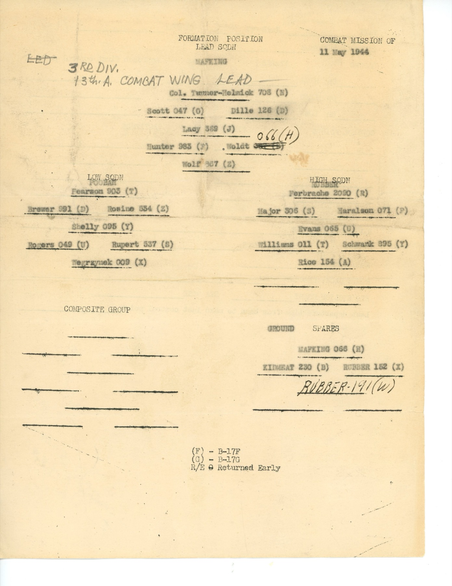
Every aircraft got away from Thorpe Abbotts at three o'clock. Katie carried twelve 500-lb general-purpose bombs.
Three minutes before the initial point, and for eleven minutes afterward, every ship in the formation threw out chaff from its bomb bay to blind the German gun-laying radar. Coming up on the target Lirette counted four 88-millimetre anti-aircraft guns firing at the formation,6 and the bursts came closer as they ran in.
He opened the bomb bay doors and waited on the lead ship, “anxiously,” for what “seemed like hours.” Then the first bombs dropped ahead of him and he pushed the release switch. The next four bursts were very close. By his own admission he was “paying more attention to the bursts than to the bomb release.”
The group's bombs went away between 18:31 and 18:35, from between 18,200 and 20,000 feet.
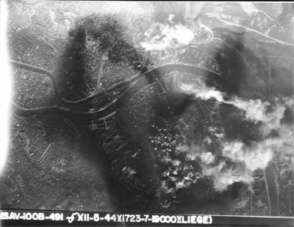
Shortly after he called “bombs away” over the intercom, there was a loud bang. Katie lurched to the right and the wing dipped.7
Out of the aeroplane
He knew at once the aeroplane was going down and that they would have to get out. But he had been thrown against the side of the fuselage and could not move toward the escape hatch. What went through his mind, pinned there, was his parents, and how they would take the news of his death.
Then came a second, muffled explosion — the fuel tanks. He believes the first burst opened a wing tank and that fuel seeped into the fuselage before it went up. Everything went red, and he lost consciousness.
The navigator, Richard Heh, was in the nose beside him and gave a statement afterward that describes the same few seconds from a foot away:
“The plane received a direct hit by flak which knocked off part of the right wing and set fire to the plane. The plane started spinning and the centrifugal force was so great I could not move to bail out. After a few seconds the gas tanks exploded and blew the bombardier and myself out of the plane.”Richard Heh, navigator, statement preserved with the crew record
The bombardier was Murray Lirette. He came to in mid-air, in free fall, at something like 15,000 feet.8
His parachute was hooked on one side, as it always was. He pulled the ripcord anyway. It opened. He then tried to get the second hook in, and the canopy “fluttered like it was going to close,” so he “decided to leave well enough alone and did not try again.” Hanging from one side, he came down at an angle, and landed in a tree about two miles from where Heh and South came down.
A crew flying behind saw the aeroplane burning, and then simply gone. Another observer reported that it came down near the marshalling yards and exploded, and that two parachutes were seen. There were in fact three. The main wreckage fell near Ougrée, just south-west of central Liège. The Missing Air Crew Report filed on Katie, number 4866, put the loss down to enemy anti-aircraft fire.
- Jack Hunter · pilotkilled
- George W. Shoesmith · co-pilotkilled
- Richard J. Heh · navigator, of Pittsburghprisoner
- Murray J. Lirette · bombardier, of Houmaprisoner
- Spiro Lecouras · radio operatorkilled
- Arthur L. Wellingham · engineer, top turretkilled
- Charles L. Anglin · ball turret, in Medhurst's placekilled
- Robert H. Kuehl · left waistkilled
- John Rupnick · right waist, in Martiello's placekilled
- Herbert S. South · tail gunnerprisoner
The two substitutes are the hardest part of the file. Anglin and Rupnick were not Katie's men; they were aboard only because one of her gunners was wounded and another was not flying. Both were killed. They had flown together before, on R. V. E. Monrad's crew in March, and Rupnick had already outlived one crew — he had first come to the 100th in September 1943 with M. E. Beatty's. Wellingham, who kept the journal, was killed on the mission after his last entry.
Four of the seven dead could not at first be identified, and were buried as unknowns until American Graves Registration teams established who they were.
Katie was the only aircraft the group lost that day. Seven more of its B-17s came home with flak damage, four of them seriously, and the rest of the group was back down at Thorpe Abbotts by ten past eight. At interrogation that evening crew after crew complained about the same thing: the bombing altitude had been too low for the number of guns defending the target. They were still giving their accounts when the alert came through for the next day's mission.
On the ground in Belgium
Down out of the tree, he found what the flak had done to him: wounds in his left buttock, left knee and ankle, and blood pooling in his left shoe.9 He used the morphine from his medical kit and lay down on the ground.
A middle-aged man in hiking clothes came up, spoke very good English, and looked over his wounds. If Lirette had not been hurt, the man said, he would take him along — which Lirette understood to mean the escape line. As it was, he was to stay where he was, and others would come and take care of him.
About ten minutes later several Belgian civilians arrived, and two doctors, a man and a woman. The doctors put medication on his leg and wrapped it in gauze. A couple of the civilians cut down nearby saplings and made a stretcher. Then two German soldiers arrived, and under their supervision he was loaded into a waiting ambulance.
He was taken to a local hospital, given chloroform, and operated on. He woke up alone in a small room. While he was recovering, Dick Heh was brought in to identify him — in torn clothes, blood-spattered and burned, in bad shape — and it was Heh who told him that he and Herbert South were the only others who had got out.
The 100th's casualty report names Seraing, on the edge of Liège, as the place of his capture, and a captured German report records that Lt Murray Lirette was committed to hospital on 13 May 1944. The same report notes that the dead were buried at the Luftwaffe cemetery at the air base it calls Trond — almost certainly Sint-Truiden, the German night-fighter station about thirty kilometres west of Liège.
From there he was moved to a prisoner-of-war hospital in Brussels for further treatment. After the D-Day landings he was told he would have to be moved again, to make room for wounded German soldiers coming in. He and other prisoners went by rail to a German compound at Stuttgart for interrogation, and from there he was sent on to Stalag Luft III.
Sagan
Stalag Luft III stood at Sagan, in Lower Silesia, about a hundred miles south-east of Berlin; the town is Żagań, in Poland, today. It was run by the Luftwaffe, which is where captured Allied airmen went.
“As we walked through the gate, the other prisoners lined the roadway looking for their other crew members. Dick Heh was there and soon grabbed my hand and shook it.”Murray Lirette, arriving at Stalag Luft III
He had arrived at a dark moment in that camp's history. Seven weeks before he was shot down, seventy-six men had tunnelled out of Stalag Luft III in the breakout that became known as the Great Escape. Fifty of the recaptured escapers were murdered on Hitler's direct order, and word of those killings was reaching the outside world in the same weeks Lirette was making his way there from a hospital bed.
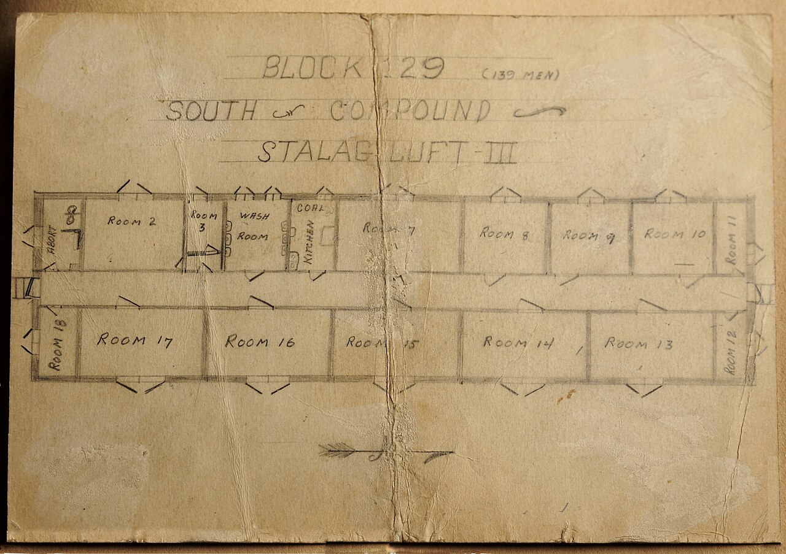
He was put in the West compound. The prisoners had a radio hidden in the camp and followed the Allied advance on it. As the Russian offensive came on through late 1944 the rations thinned out. That winter was “so cold,” he said, and “we went to bed hungry almost every night.”
At home, meanwhile, the news had reached his family in pieces. The first official word came through the International Red Cross. Then the Germans put out a shortwave broadcast naming five captured American airmen, Lieutenant Lirette among them, and Americans who picked it up wrote and wired to Houma to tell his family he was alive — cards and letters came from Akron and Dayton, Ohio; from Carbondale, Bethlehem and Bloomsburg, Pennsylvania; from West Palm Beach, Florida; from Jamaica, Cochecton, Staten Island and New York City; from Teaneck and Point Pleasant, New Jersey; and from Burton, South Carolina. The provost marshal general in Washington wired the family what the broadcast had said:
“Lieutenant Murray Lirette received multiple splinter wounds in left hip. Bone in left foot is broken and is healing well without complications. The patient is still in bed and feeling well.”Intercepted German broadcast, as wired by the provost marshal general
Then a card arrived in his own handwriting, sent on 1 June 1944:
“Dearest Mom and Dad: I know you will be glad to hear that I am well and am being well taken care of. I am in a hospital, but my few scratches have healed. I will write again when possible. Your devoted son, Murray.”
A few scratches. On 26 August 1944 the Houma Times printed the whole story under the headline “Lt. Murray Lirette Sends Card from German Prison to His Parents Here.” Messages were still coming in, Mrs. Lirette told the paper that week.
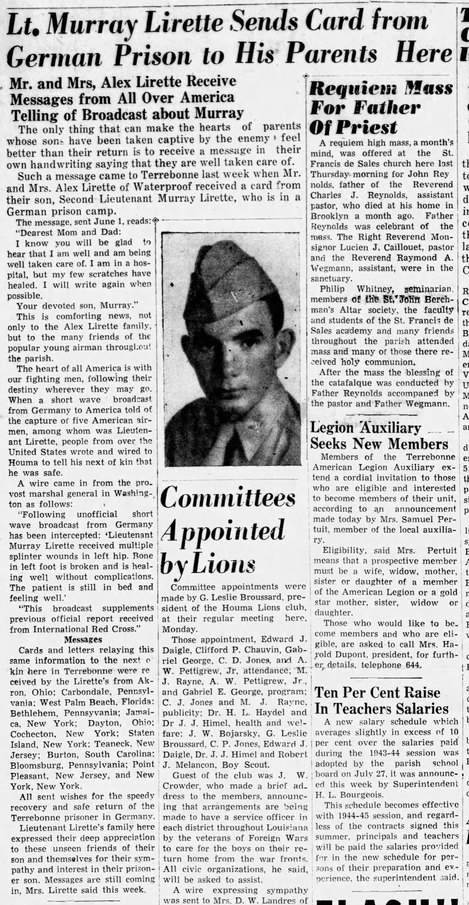
The march
On the morning of 27 January 1945 the Germans told the prisoners that Stalag Luft III would be evacuated and that everyone would be marched west, away from the advancing Russians. Late that evening it began. Lirette's West compound was moved out at half past midnight, into freezing wind and snow, each man carrying what he could and one Red Cross food parcel. Lirette wore every piece of clothing he had and wrapped himself in a blanket, and was still freezing.
The guards kept everyone moving and passed the word down the column that anyone who tried to escape, or lay down to sleep, would probably freeze to death. That first stretch ran twenty miles, until about nine the next morning, when they stopped briefly at a crossroads where there was a building with toilets and drinking water.
Around six in the evening word came down that anyone who could not keep the pace should fall out to the side of the road. His wounds had still not fully healed and his left ankle and knee had swollen and turned painful, so he dropped out with seven other prisoners. Their group went on more slowly under a single elderly guard, and slept that night on the floor of an unheated pub — “still better,” he thought, “than staying outside in the freezing weather.”
Ten miles the next day, and the guard stopped them at a house by the road that turned out to belong to the local burgermeister, who came out and gave each prisoner four or five apples from his orchard. Soon after, two horse-drawn sleds arrived. The men loaded aboard and went on much faster than they had been walking — at one point overtaking the columns of marching prisoners — and that afternoon reached Muskau, about twenty miles east of Spremberg, where they spent the night on the upper floors of a brick factory. It was the first time any of them had been warm since the march began.
The next day they were marched to Spremberg and loaded into railway cars that had been used for livestock. “Complaints were useless,” he said, “and travel by rail in the smelly cars was at little better than walking.” After three days of it they arrived on the outskirts of Nuremberg, and were put into an overcrowded prisoner-of-war encampment.
The cold had caught up with him. In his first days at that camp he developed a severe sinus infection, and as the Germans could offer no medical care in the camp he was taken to a nearby prisoner-of-war hospital and looked after by German orderlies.10
When the Germans prepared to pull out of the area, Lirette was judged too ill to travel, and was left behind in the hospital with ten other American and British prisoners. Before he left, the German doctor handed him two white pills and told him to take one each night. They gradually helped. His last days as a prisoner were spent in the hospital's underground shelter, out of the way of the artillery falling around it.
Liberation
It came on 17 April 1945. Two American GIs pulled up at the hospital in a jeep, handed the prisoners two bottles of wine, and told them the tanks would be there soon. A few hours later tanks of General Patton's Third Army arrived, and the prisoners were helped into army trucks and driven to France.
“I was so elated and happy… and it's hard to express my feelings of that day. There were times during my captivity where I didn't know if I would make it.”Murray Lirette
In France he was deloused, fed and given clothes, then flown to Scotland in a DC-3. After three weeks recuperating in a hospital there he was sent down to England, and boarded an LST for Newport News, Virginia. When he finally got home to Houma his parents were, in his word, “so happy.” They had received only a couple of the letters he had sent from Stalag Luft III.
On 6 October 1945 the Houma Times ran its third and last notice, “To Be Discharged”: after fifteen months' overseas service with the Army Air Forces, Second Lieutenant Murray J. Lirette of Houma was being honourably separated at the San Antonio District installation of the AAF Personnel Distribution Command. He was discharged in November 1945.11
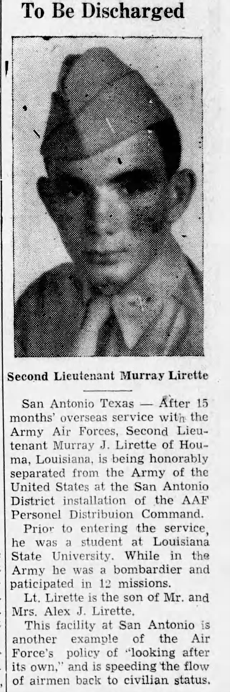
Home
Then his father gave him a stern directive about going back to school. He signed up for classes at LSU and majored in electrical engineering, and took his bachelor's degree in 1948. He has said since that he remains thankful for his father's direction, and for the discipline his parents instilled.
That same year, on 26 November 1948, he married Beverly Belanger of Houma. They raised four daughters, and in time moved to Slidell, on the north shore of Lake Pontchartrain, which was home for the next fifty-nine years.
The war did not entirely leave him. A profile written when he was ninety-six noted that the injuries from the loss of his B-17 were still with him.
The rocket factory
For more than thirty years he worked in aircraft development, and in the course of it had what he called the unique opportunity to work with NASA on the space programme.
East of New Orleans stands the Michoud Assembly Facility, which NASA acquired in 1961 for building very large space vehicles. Saturn rocket stages were built there during the Apollo years. In the 1970s it moved over to the Space Shuttle, and in August 1973 NASA chose Martin Marietta to design, build, test and deliver the Shuttle's External Tank — the structural backbone of the whole assembly and the reservoir that fed liquid oxygen and liquid hydrogen to the orbiter's main engines. Martin Marietta built the tanks at Michoud, under the management of NASA's Marshall Space Flight Center.
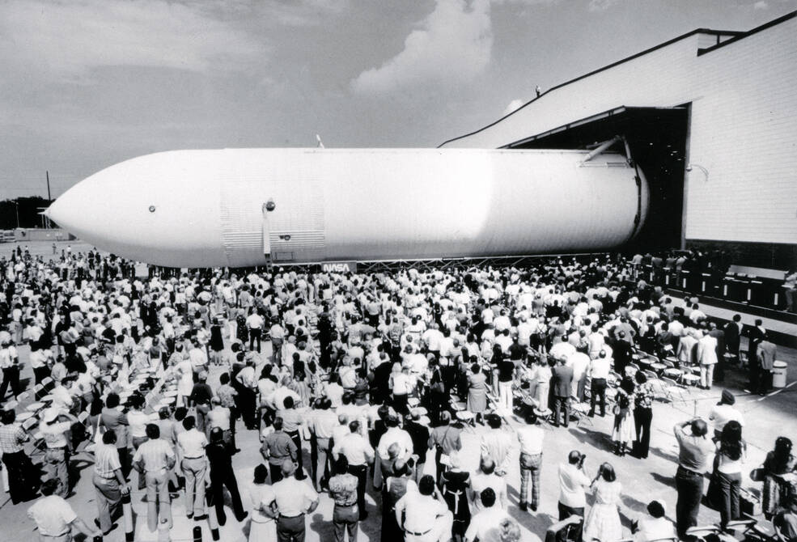
That is where his name surfaces in print again. The 30 March 1984 issue of Martin Marietta News carried a short item headed “New technology awards go to 8.” The company's Denver Aerospace New Technology Evaluation Committee had handed out cash awards for technology disclosures arising from work on NASA contracts, and among the eight was:
“Murray J. Lirette, Michoud production operations: ‘Safing System for Robots and Repetitive Motion Machines.’”Martin Marietta News, 30 March 1984
The item does not describe how the system worked. What it does say is enough: he was in production operations at Michoud during the Shuttle years, he came up with a safety system for industrial robots and repetitive-motion machinery out of NASA-contract work, and the company thought it new enough to reward. On 19 May 1984, at Martin Marietta's Annual Awards Night, his name was listed again among the New Technology honourees.
Forty years earlier he had been in the nose of a B-17. Now he was helping build the machines that built spacecraft.
Still turning up
He kept going for a long time. On his ninety-fifth birthday, in 2019, he went out and shot an 89 at golf, and at ninety-six he was still playing three days a week when the weather allowed. That same year a local civic organisation gave him its “Every Moment Counts” award, for seniors who stay active in the community.
Beverly died on 9 April 2020, after seventy-one years of marriage.
He has stayed close to the Hundredth. He gave his own photographs to the Foundation's archive — the portrait and the Pyote crew picture on this page are both credited to him, which is the only reason anything is known about the crew he did not fly with. And in May 2025, aged 101, he went to the 100th Bomb Group reunion at the National WWII Museum in New Orleans. Three veterans of the group were there, with more than 360 family members and friends.
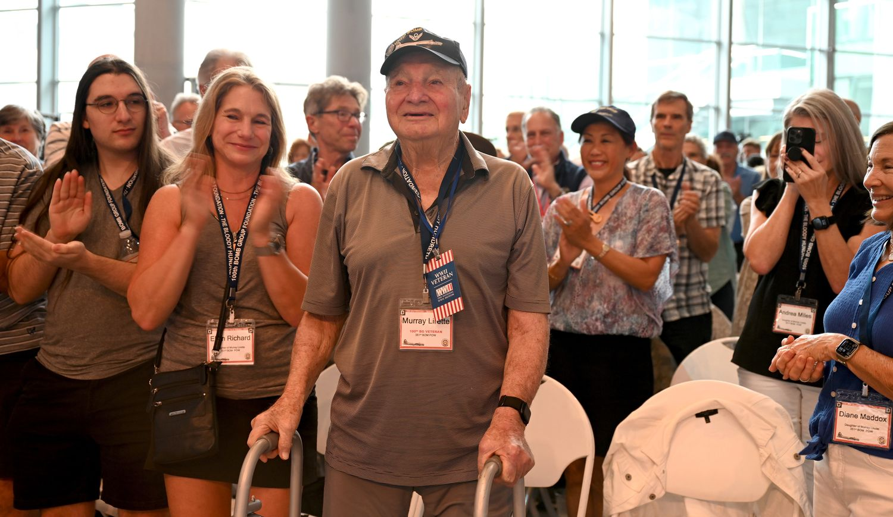
The other two were the pilot John “Lucky” Luckadoo, then 103, and the navigator James Rasmussen, also 101. Between them, one pilot, one navigator and one bombardier of the Bloody Hundredth.
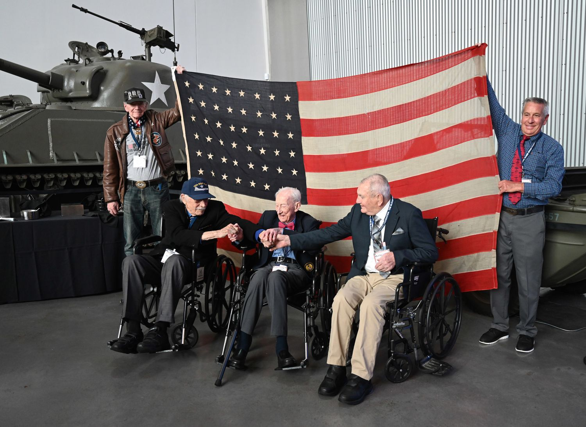
Belgium, 2026
On 16 May 2026, in Baton Rouge, at 102 years old, Murray Lirette was made a Chevalier de l'Ordre de Léopold — a Knight of the Order of Leopold, Belgium's oldest and highest order. It was presented by the Belgian deputy ambassador and by Roland Vandenweghe, the Honorary Consul for Belgium in Louisiana, in recognition of his wartime service over their country.
He was decorated by the country he was shot down over, eighty-two years after he fell into it. The coverage of that day described him as one of only three men to survive his crew, and as the last surviving prisoner of war of the 100th Bomb Group.
“I am very proud to be a part of the 100th Bomb Group. We lost a lot of men, but we did a lot of good and we contributed to the bombing effort against the Germans.”Murray Lirette
Notes on the record
Where this comes from
The spine of this account is Murray Lirette's own, as told to and written up by Matt Mabe of the 100th Bomb Group's historical team and board of directors, in Surviving the Bloody Hundredth: The Service of Murray Lirette. Everything in quotation marks that is attributed to him comes from that piece. It is undated but predates the Belgian decoration of May 2026.
Around it sit the wartime records: his personnel file and the crew memo at the 100th Bomb Group Foundation, the Missing Air Crew Report and casualty report, the group's mission narrative for 11 May 1944, a captured German report, three notices in the Houma Times, and later newspaper and Air Force coverage. Where his memory and the paperwork differ, his account is given the weight and the difference is footnoted.
Names and numbers
He appears in the records as Murray J. Lirette and Murray Joseph Lirette. His serial number is O-767531 on both his personnel page and the Missing Air Crew Report; one casualty summary prints O-757531, almost certainly a transcription slip. The MACR is numbered 04866; a separate “Aircraft Lost” index on the Foundation's site gives 4868 for the Hunter crew, which is an internal database error.
The Foundation's crew memo writes its dates day first — 11/5/44 for 11 May, 12/4/44 for 12 April — so its note that the crew “joined the 100th Group on 5/4/44” means 5 April 1944, not 4 May. The same convention puts Rupnick's arrival with the Beatty crew, 6/9/43, on 6 September 1943.
What is firm and what is not
Firm. His identity, home town, parents, serial number, rank, trade, squadron and group. His wings at Roswell in October 1943 and the Pyote photograph. Katie as the crew's aircraft. The Liège mission of 11 May 1944 — the briefing, the timings, the flak — and the loss of Katie with seven killed and three captured. Heh's statement. The German hospital report of 13 May, his card home of 1 June, and the three Houma Times notices. Stalag Luft III, the January 1945 evacuation, Nuremberg, and liberation by Patton's Third Army. The LSU degree, the marriage and the daughters. The 1984 Martin Marietta award at Michoud. The 2025 reunion and the 2026 Order of Leopold.
His, and uncorroborated so far. Santa Ana, the instructor period at Pyote, the summons to the Chief's office and Kearney. The man in hiking clothes and the Belgian doctors. The Stuttgart interrogation compound. The West compound, the hidden radio, the detail of the march — the pub, the burgermeister's apples, the sleds, the brick factory at Muskau, the boxcars from Spremberg — the sinus infection, the two white pills, the underground shelter, the two GIs with the wine on 17 April, and the route home by DC-3, Scotland and LST. None of it contradicts the records; none of it has been separately documented here.
Still not settled. How many missions he flew. He says ten by 8 May; his discharge notice says twelve; the group's crew database lists only three dates, because it names individual crews only when something happens to them. The true figure is very likely his.
From the enemy. The description of his wounds in the Houma Times — splinters in the left hip, a broken bone in the left foot — comes from an unofficial German broadcast relayed by the provost marshal general. His own account gives left buttock, knee and ankle.
Other places the records disagree.
- Which wing. The eyewitness report in the MACR puts the hit “in the wing at the No. 1 engine”; Heh's statement, and the casualty summary after it, say the right wing. On a B-17 the number one engine is the outboard engine on the left wing, so the two are hard to reconcile. Lirette's memory of the aeroplane lurching right, and of a wing tank going up, leans toward the right.
- How South got out. The Foundation's summary says Heh, Lirette and South were all blown out of the aircraft; Heh's own statement says South bailed out by himself despite a compound fracture of the leg.
- The clock. The group narrative has bombs away between 18:31 and 18:35 and the group landing at 20:10; the MACR records the aircraft last seen at 19:31; the imprint on the strike photograph appears to read 1723. The three are each roughly an hour apart, which may reflect different time standards rather than different events, but that has not been checked.
- Who gave the statement. The group's mission narrative introduces Heh's statement as coming from the co-pilot. Heh was the navigator; the co-pilot, George Shoesmith, was killed.
- The gunners' ranks. Records variously give Lecouras and Wellingham as staff or technical sergeants, Kuehl as sergeant or staff sergeant, and the ball turret gunner as Charley or Charles L. Anglin. Ranks are left off the crew list above for that reason.
Worth checking. The photograph of Katie was first supplied for this record by the family, and an identified photograph of 42-39983 with her nose art is catalogued by the Imperial War Museums' American Air Museum; the two should be matched before the image is published anywhere. The 2026 coverage describes the Order of Leopold as recognising his service “in his platoon.” Bomber crews did not have platoons; this looks like a newsroom slip and does not affect the award.
Not established. His American decorations. He is described publicly as a decorated veteran, and his record would very likely support a Purple Heart, Air Medal and the later Prisoner of War Medal, but no award card or citation list has been seen, so none is claimed here. Likewise his postwar work: the evidence places him with Martin Marietta at NASA's Michoud facility, not as a NASA civil servant, and does not tie him to any particular tank, mission or production station.
What is still out there
- More of Murray's own account. The piece by Matt Mabe is the best source there is, and a full oral history would be better still. The 100th Bomb Group Foundation runs an oral-history programme and publishes Splasher Six; the National WWII Museum in New Orleans, thirty miles from Slidell, holds one of the largest oral-history collections in the country and will travel to record.
- Richard Heh's prisoner-of-war journal. Heh — the navigator blown out of the nose beside Lirette, who identified him in the hospital and met him again at the gate at Sagan — kept a journal in captivity, scanned in two parts at
100thbg.com/images/Diaries/and linked from his personnel page. - The mission list. Arthur Wellingham's journal, which was still in family hands in the 1980s, and the 351st Bomb Squadron's operations records for April and May 1944 would between them settle the count that his own memory puts at ten.
- MACR 4866 in full, held by the U.S. National Archives: the loading list, the eyewitness statements as filed, and the enclosed German capture papers.
- His service and prisoner records. The National Archives' POW data file in Record Group 389, his liberation questionnaire, and his Official Military Personnel File through the National Personnel Records Center — with the caveat that the 1973 fire there destroyed a very large share of Army records from this period.
- Belgium and the seven. Local aviation historians around Liège and Sint-Truiden document crash sites in detail, and Individual Deceased Personnel Files exist for each of the seven men killed. Between them they should fix where Katie came down and where her dead lie today.
- Martin Marietta at Michoud. Employee newsletters, service-anniversary lists and retirement records would fill in the thirty years of aircraft development work.
Still open: his mother's name; his prisoner-of-war number and the date he reached Sagan; the hospital and the town where he was liberated; and where the seven men of Katie are buried now.
Footnotes
- The day and month come from his own account, which has the crew assigned to the 100th on his birthday, 6 April 1944. The year is not stated there; 1924 follows from his reported ages — 101 at the May 2025 reunion, 102 in May 2026 — and from his ninety-fifth birthday in 2019. ↩
- He gives October 1942 for his enlistment; the Houma Times of 16 October 1943 says he joined the army in September 1942. ↩
- That same notice calls him a graduate of LSU and says that before joining the army he was raising show cattle in Houma. His own account has him a freshman whose grades were suffering, enlisting from the university; the 1945 notice calls him a student there before the service; and his degree came in 1948. The cattle are not mentioned anywhere else. ↩
- His account gives 6 April 1944, his birthday. The Foundation's crew memo says the crew joined the group on 5 April. ↩
- His discharge notice of October 1945 credits him with twelve missions. The Foundation's crew database lists the crew on only three dates — 7, 8 and 11 May — but it names crews only when something notable happens to them, and Wellingham's journal of the crew's missions runs from 12 April. ↩
- Four guns is his memory of what was firing at the formation on the run-in. The briefing that morning had warned of sixteen heavy guns defending the target. ↩
- Which wing took the hit is not settled in the records; see “Other places the records disagree,” above. ↩
- Heh, falling separately, estimated about 10,000 feet before he came to. Both are a man's guess at his own fall. ↩
- The German broadcast relayed to his family described splinter wounds in the left hip and a broken bone in the left foot. Same side, different reckoning. ↩
- The 2026 news coverage attributes this second spell in hospital to the injuries from the loss of his B-17. His own account gives the sinus infection as the reason he was taken there, though it also says his Liège wounds were still unhealed on the march. ↩
- The Houma Times notice of 6 October 1945 reports the separation as under way at San Antonio; his account gives the discharge as November 1945. The notice presumably ran ahead of the event. ↩
Born 6 April 1924
Parents Mr. and Mrs. Alex J. Lirette, Houma
Enlisted October 1942
Trained Santa Ana, Calif. · Roswell AAF, N.M. · Pyote, Texas
Serial no. O-767531, USAAF
Rank / trade 2nd Lieutenant, Bombardier
Unit 351st Bomb Squadron, 100th Bomb Group (H), 8th AF
Station Thorpe Abbotts, AAF Station 139, Norfolk
Aircraft B-17G 42-39983 “Katie” / EP-F
Pilot 2nd Lt Jack Hunter
Loss 11 May 1944, Liège, Belgium — flak
Casualty file MACR 4866
Captivity Brussels · Stuttgart · Stalag Luft III (West) · Nuremberg
Liberated 17 April 1945, U.S. Third Army